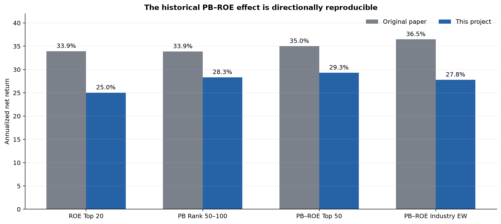
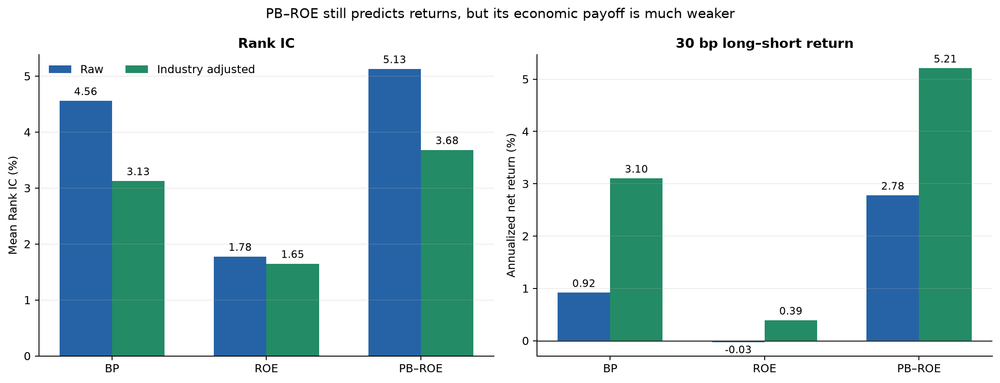
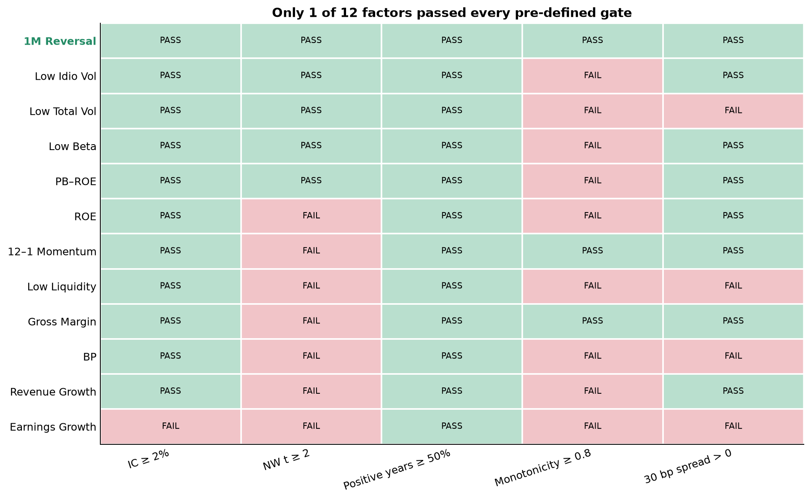
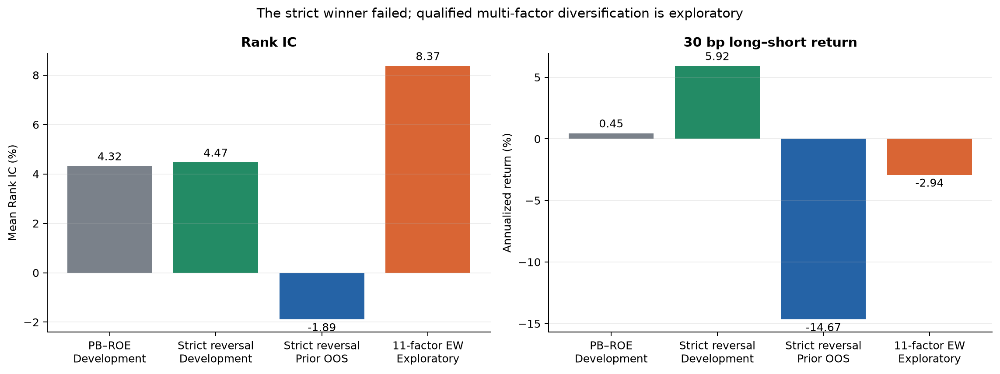
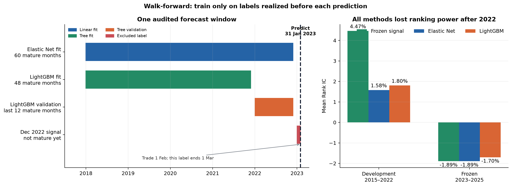
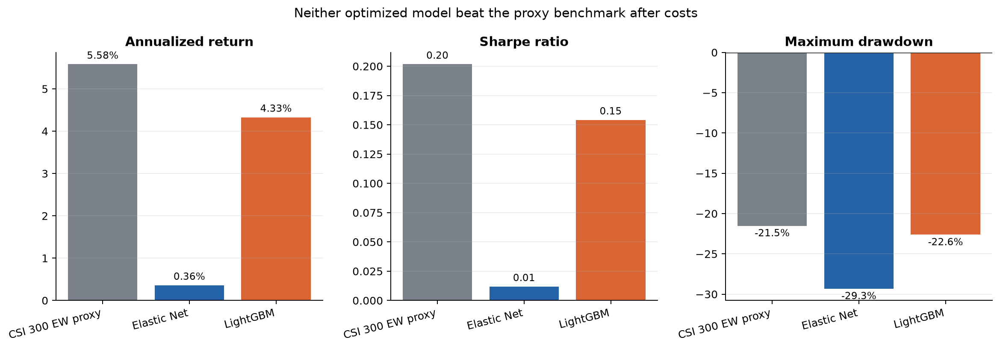

Summer Research Project · Quantitative Investing
Reproducing and
Modernizing the
PB–ROE Strategy
From a 2011 stock-selection rule to a modern, point-in-time factor portfolio
10-minute research presentation · CSI 300 · Freeze 29ec06374b065f12
01 · Economic and market logic
Pay less for profitable firms—but define how the idea can fail
Economic mechanism
- ROE proxies the profitability of book capital.
- PB is the market price paid for that capital.
- Slow repricing can arise from anchoring, extrapolation and limits to arbitrage.
What would support it?
- Positive and stable Rank IC and ICIR.
- Ordered five-group forward returns.
- Positive long–short payoff after costs.
- Persistence in a frozen future period.
The project tests each condition separately.
Failure scenarios and limits
- Low PB may signal a value trap; ROE can be cyclical or accounting-driven.
- Crowding, regime change and turnover can erase the premium.
- Free-data fields cannot replicate every Wind snapshot.
- Static industry labels cannot be used causally through history.
02 · Technical implementation and AI governance
A reproducible cross-sectional engine—with AI inside guardrails
Executable research chain
Parquet tables
monthly panel
1/99 + z-score
walk-forward
portfolio
AI was a tool, not the judge
Specification review, code scaffolding, debugging, documentation and plotting scripts.
Universe, hypotheses, thresholds, data decisions, freeze rules and every final conclusion.
Git commits, deterministic seeds, tests, data/result hashes and Python-generated figures.
03 · Time design
Separate windows prevent data mixing and future information
18 original-paper holding periods. This is the only window used for historical reproduction.
Price history for momentum, beta, volatility and covariance. It is input history, not a missing backtest.
Modern PB–ROE evaluation begins in 2012. Factor selection and model development use 2015–2022.
Rules are carried forward without re-selecting factors after seeing results.
04 · Original-paper reproduction
The historical PB–ROE effect is directionally reproducible

Reproduced PB–ROE Top 50 return, after the original cost assumptions.
Original-paper result for the same core rule.
Holding periods in which the reproduced strategy beat its benchmark.
Not a field-by-field Wind replication. Free data, industry versions and execution details explain part of the gap.
05 · Modern re-evaluation
PB–ROE still predicts returns, but the economic payoff is much weaker

PB–ROE mean Rank IC; ICIR = 0.82 and Newey–West t = 3.73.
Raw PB–ROE annualized long–short return after 30 bp cost.
Five-group monotonicity—below the 0.80 selection gate.
Static industry labels are descriptive only; they are excluded from the formal historical target and constraints.
06 · Twelve-factor validation
Only 1 of 12 factors passed every pre-defined gate

Five gates: IC, Newey–West significance, positive-year stability, five-group monotonicity and positive 30 bp spread. Factor direction is fixed in the development sample.
07 · Frozen-factor test
The only development winner failed after 2022

Frozen input
Only standardized one-month reversal
Development Rank IC; 30 bp return is 5.92%.
Frozen 2023–2025 Rank IC.
Frozen long–short annual return after 30 bp.
08 · Strict walk-forward comparison
Every forecast uses a rolling, fully matured information set

31 Jan 2023 forecast
Elastic Net uses 60 mature signal months through Nov 2022.
Time-ordered validation
LightGBM fits 48 months and validates on the last 12 mature months.
Leakage blocked
The Dec 2022 label ends on 1 Feb, so it is excluded on 31 Jan.
Frozen result
Elastic Net IC −1.89% (ICIR −0.31); LightGBM IC −1.70% (ICIR −0.35).
09 · Constrained portfolio
Neither optimized model beat the proxy benchmark

Elastic Net annualized return after 30 bp.
LightGBM annualized return after 30 bp.
CSI 300 constituent equal-weight proxy.
Turnover uses drifted pre-trade weights; static current-industry constraints are disabled.
10 · Conclusion
What the study proves—and what it does not
Supported by the evidence
- The historical PB–ROE direction and return magnitude are broadly reproducible.
- PB–ROE retains modern ranking information, although its economic payoff has weakened.
- The corrected first-announcement timing passes a hard lag audit.
- No return label enters model training before its holding period has ended.
Not established
- The original paper is not reproduced field by field.
- The development-selected reversal signal does not persist after 2022.
- Neither model nor optimized portfolio beats the frozen benchmark.
- A genuinely untouched future period is still required.